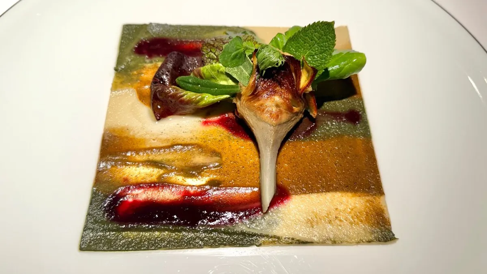

★★★ Plan A
Modena · Via Stella 22
Osteria Francescana
Massimo Bottura. The only 2★-or-above in Modena city or province; three stars since 2012, confirmed in the 2026 Guida[1]. The current tasting menu, "Ho Fame! Ho Fame!", takes its title from a Vincenzo Cabiati ceramic[26].
Eleven courses · ~3 hours · online booking only with a €300/person credit-card hold, 96-hour cancellation[19].
€350tasting
+€2407-wine pairing